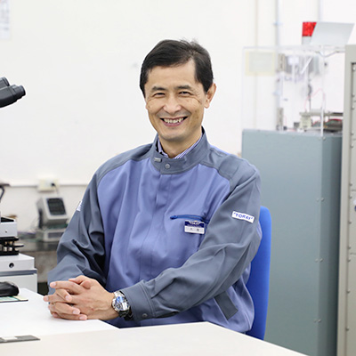

- HOME
- 研究・技術開発
- 研究者・技術者の人材育成制度
- リサーチフェロー/工務技監
- 大倉 正寿 / フィルム研究所
大倉 正寿（リサーチフェロー）

- 博士（工学）、技術士（化学）
- 所属：フィルム研究所
- 専門分野：フィルム材料設計
研究に対する想い
企業研究の醍醐味は、１つの着想・アイデアが会社を通して大きな事業となり、社会に貢献できるところです。機能素材の研究に当たっては、構造形成・機能発現メカニズムの解明にこだわっています。既存の概念を鵜呑みにせず、新たな仮説を構築し検証を繰り返しブラッシュアップしていくことで、飛躍的な特性向上に至るコンセプトを得る経験をしてきました。また、新素材創出には時間がかかるため、将来の社会や技術トレンドを予測することも重要であり、多角的に情報を集め、自分なりの将来予想を持って研究を進めています。 一つの製品ができるまでには、数多くの試行錯誤と地道な検証が必要ですが、強い気持ちをもって前向きに社内の仲間やお客様と一緒に研究・開発に取り組んでいます。
主な論文
| 1992年 | Polymer,33(17), pp. 3686-3690(1992) |
|---|---|
| Polymer,33(23), pp. 5044-5048(1992) | |
| 2007年 | 有機絶縁材料の最先端、CMC出版 |
| コンバーテック,2007年11月 | |
| 2019年 | 成形加工、31、434-437(2019） |
| 月刊オーム、106、10月号(2019） | |
| 2021年 | 高分子学会 第70回高分子学会年次大会、予稿集、発表番号2A22(2020) |
社外受賞歴
| 2020年 | 2020年度 高分子学会賞（技術） |
|---|---|
| 2021年 | 第68回 大河内記念技術賞 |
| 2022年 | 令和4年度 近畿地方発明表彰 発明奨励賞 |